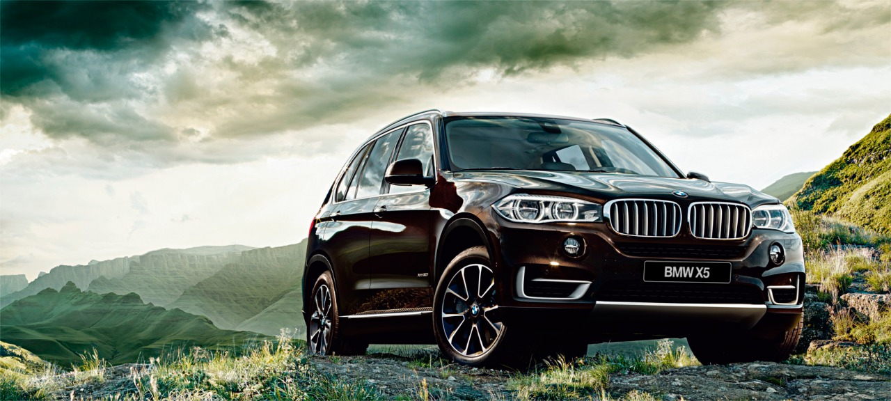
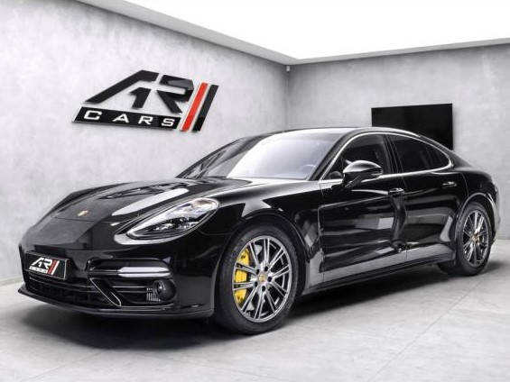

| BMW X5 | |
|---|---|
|  more images | The Land Rover Range Rover (generally known simply as a Range Rover) is a full-sized luxury sport utility vehicle (SUV) from Land Rover, a marque of Jaguar Land Rover. The Range Rover was launched in 1970 by British Leyland. This flagship model is now in its fourth generation.Jaguar Land Rover has also extended the use of the Land Rover Range Rover sub-brand with the introduction of Range Rover Evoque, the Range Rover Velar and the Range Rover Sport. |
| Porsche Panamera | |
|---|---|
|  more images | The Porsche Panamera is a luxury 4-door saloon manufactured by German automobile manufacturer Porsche.[1][2][3] It is front-engined and has a rear-wheel-drive layout, with all-wheel drive versions also available. It is the only hatchback manufactured by Porsche as part of its strategy of expanding its market.The production version of the Porsche Panamera was unveiled at the 13th Auto Shanghai International Automobile Show in Shanghai, China, on April 2009.[4] In 2011, hybrid and diesel versions were launched. In April 2013, a facelift to the Panamera was announced, making its debut again at the Shanghai Auto Show. |